3.4 Censos de población y vivienda
Es necesario definir las variables del país con los que se desea trabajar. De acuerdo a esto, como primer paso se debe tener acceso al censo del país, para ello puede acceder desde el siguiente enlace https://redatam.org/en/microdata en el cual dispondrá de un archivo .zip con los microdatos del país. Ahora bien, para leer el conjunto de datos, es necesario emplear la función redatam.open de la librería redatam, la cual depende directamente del diccionario censal del software REDATAM, este es un archivo con extensión dicx y que debe encontrarse en la carpeta sobre los datos que se están leyendo. Así, es como se crea un objeto dentro de R que hace la respectiva unión del diccionario con los microdatos de la base de datos censal. La siguiente sintaxis muestra la lectura del diccionario en R y los cálculos iniciales
# https://redatamr.ideasybits.com/
library(redatam)
RepDoma <- redatam.open("cpv2010dom-cde.dicX")
CONTEOS <- redatam.query(RepDoma,
"freq PROVIC.IDPROVI
by VIVIENDA.ZONA
by PERSONA.P27
by PERSONA.P29
by PERSONA.ANEST", tot.omit = FALSE)Después de realizar algunas validaciones se estandarizan las variables como muestra el siguiente código.
CONTEOS <- readRDS(file = "Recursos/Día1/Sesion2/Data/CONTEOS.RDS")
# Eliminando totales de la tabla
CONTEOS2 <- CONTEOS %>% filter_at(vars(matches("_label")),all_vars(. != "__tot__"))
censo_mrp <- CONTEOS2 %>%
transmute(dam = str_pad(
string = IDPROVI1_value,
width = 2,
pad = "0"
),
area = case_when(ZONA2_value == 1 ~ "1", # 1 = Urbana
TRUE ~ "0"),
sexo = as.character(P273_value),
edad = case_when(
P294_value %in% 0:14 ~ "1", # 0 a 14
P294_value %in% 15:29 ~ "2", # 15 a 29
P294_value %in% 30:44 ~ "3", # 30 a 44
P294_value %in% 45:64 ~ "4", # 45 a 64
TRUE ~ "5"), # 65 o mas
anoest = case_when(
P294_value < 5| is.na(ANEST5_value) ~ "98", # No aplica
ANEST5_value == 99 ~ "99", #NS/NR
ANEST5_value %in% 0 ~ "1", # Sin educacion
ANEST5_value %in% c(1:6) ~ "2", # 1-6
ANEST5_value %in% c(7:12) ~ "3", # 7-12
ANEST5_value > 12 ~ "4" , # 12 o mas
TRUE ~ "Error"
),
value) %>%
group_by(dam, area, sexo, edad,anoest) %>%
summarise(n = sum(value), .groups = "drop")A partir de la base estandarizada es posible construir algunas covariables para la dam.
censo_mrp <- readRDS("Recursos/Día1/Sesion2/Data/censo_mrp_dam.rds")
tasa_censo <- model.matrix(dam ~ -1 +.,
data = censo_mrp %>% select(-n)) %>%
data.frame() %>%
mutate(dam = censo_mrp$dam,
n = censo_mrp$n) %>%
group_by(dam) %>%
summarise_all(~weighted.mean(x = .,w = n)) %>%
select(-area0, -anoest98,-anoest98,-n)
tba(tasa_censo)| dam | area1 | sexo2 | edad2 | edad3 | edad4 | edad5 | anoest2 | anoest3 | anoest4 | anoest99 |
|---|---|---|---|---|---|---|---|---|---|---|
| 01 | 1.0000 | 0.5224 | 0.2781 | 0.2117 | 0.1808 | 0.0725 | 0.2000 | 0.3680 | 0.2286 | 0.0193 |
| 02 | 0.7718 | 0.4733 | 0.2773 | 0.1831 | 0.1531 | 0.0634 | 0.3350 | 0.2771 | 0.0540 | 0.0065 |
| 03 | 0.7128 | 0.4804 | 0.2643 | 0.1572 | 0.1489 | 0.0718 | 0.3470 | 0.2542 | 0.0493 | 0.0055 |
| 04 | 0.8345 | 0.4826 | 0.2756 | 0.1738 | 0.1454 | 0.0638 | 0.3169 | 0.2948 | 0.0827 | 0.0082 |
| 05 | 0.5977 | 0.4849 | 0.2509 | 0.1752 | 0.1748 | 0.0899 | 0.3471 | 0.3252 | 0.0625 | 0.0052 |
| 06 | 0.6626 | 0.4909 | 0.2671 | 0.1988 | 0.1736 | 0.0786 | 0.3140 | 0.3383 | 0.1038 | 0.0087 |
| 07 | 0.4828 | 0.4768 | 0.2380 | 0.1431 | 0.1527 | 0.0788 | 0.3287 | 0.1949 | 0.0315 | 0.0037 |
| 08 | 0.5144 | 0.4610 | 0.2648 | 0.1728 | 0.1625 | 0.0845 | 0.3822 | 0.2730 | 0.0440 | 0.0035 |
| 09 | 0.4535 | 0.4889 | 0.2733 | 0.2084 | 0.1694 | 0.0764 | 0.3125 | 0.3699 | 0.0840 | 0.0078 |
| 10 | 0.7996 | 0.4865 | 0.2658 | 0.1648 | 0.1418 | 0.0665 | 0.3214 | 0.2603 | 0.0485 | 0.0052 |
| 11 | 0.7784 | 0.4766 | 0.3001 | 0.2393 | 0.1250 | 0.0430 | 0.2986 | 0.3722 | 0.0650 | 0.0076 |
| 12 | 0.9425 | 0.5059 | 0.2821 | 0.2061 | 0.1466 | 0.0515 | 0.2810 | 0.3955 | 0.0794 | 0.0080 |
| 13 | 0.4696 | 0.4885 | 0.2762 | 0.2049 | 0.1606 | 0.0719 | 0.3142 | 0.3582 | 0.0781 | 0.0070 |
| 14 | 0.5252 | 0.4855 | 0.2700 | 0.1929 | 0.1729 | 0.0731 | 0.3258 | 0.3517 | 0.0765 | 0.0079 |
| 15 | 0.5312 | 0.4718 | 0.2685 | 0.1984 | 0.1764 | 0.0798 | 0.3103 | 0.3318 | 0.0519 | 0.0048 |
| 16 | 0.6441 | 0.4651 | 0.2738 | 0.1932 | 0.1334 | 0.0459 | 0.2589 | 0.2403 | 0.0316 | 0.0028 |
| 17 | 0.6810 | 0.5047 | 0.2665 | 0.1984 | 0.1549 | 0.0646 | 0.3707 | 0.3252 | 0.0460 | 0.0052 |
| 18 | 0.5839 | 0.4895 | 0.2699 | 0.2126 | 0.1689 | 0.0703 | 0.2875 | 0.3940 | 0.0727 | 0.0067 |
| 19 | 0.2891 | 0.4902 | 0.2568 | 0.2001 | 0.1839 | 0.0954 | 0.3037 | 0.3483 | 0.1097 | 0.0078 |
| 20 | 0.4354 | 0.4837 | 0.2811 | 0.2007 | 0.1554 | 0.0628 | 0.3080 | 0.3691 | 0.0595 | 0.0059 |
| 21 | 0.5186 | 0.4996 | 0.2807 | 0.1956 | 0.1451 | 0.0507 | 0.2931 | 0.3782 | 0.0783 | 0.0082 |
| 22 | 0.6009 | 0.4725 | 0.2559 | 0.1698 | 0.1695 | 0.0891 | 0.3482 | 0.2674 | 0.0642 | 0.0075 |
| 23 | 0.8408 | 0.5063 | 0.2861 | 0.1974 | 0.1522 | 0.0572 | 0.2840 | 0.4022 | 0.0817 | 0.0077 |
| 24 | 0.5628 | 0.4827 | 0.2754 | 0.1871 | 0.1662 | 0.0743 | 0.3198 | 0.3320 | 0.1000 | 0.0089 |
| 25 | 0.7561 | 0.5017 | 0.2795 | 0.2221 | 0.1583 | 0.0649 | 0.2843 | 0.3727 | 0.1106 | 0.0102 |
| 26 | 0.4795 | 0.4776 | 0.2632 | 0.1821 | 0.1770 | 0.1038 | 0.3340 | 0.3156 | 0.0767 | 0.0074 |
| 27 | 0.7917 | 0.4785 | 0.2810 | 0.2098 | 0.1501 | 0.0681 | 0.3121 | 0.3151 | 0.0817 | 0.0074 |
| 28 | 0.6797 | 0.4949 | 0.2690 | 0.2028 | 0.1597 | 0.0655 | 0.2883 | 0.3819 | 0.0855 | 0.0101 |
| 29 | 0.4939 | 0.4836 | 0.2656 | 0.1718 | 0.1537 | 0.0756 | 0.3438 | 0.3188 | 0.0526 | 0.0056 |
| 30 | 0.7412 | 0.4902 | 0.2722 | 0.1855 | 0.1624 | 0.0775 | 0.3308 | 0.3338 | 0.0696 | 0.0070 |
| 31 | 0.6292 | 0.4587 | 0.2556 | 0.2037 | 0.1761 | 0.0848 | 0.3785 | 0.2681 | 0.0602 | 0.0050 |
| 32 | 0.8780 | 0.5098 | 0.2870 | 0.2126 | 0.1502 | 0.0447 | 0.2409 | 0.4005 | 0.1291 | 0.0131 |
Es posible construir a partir de una variable del censo, haciendo que el proceso se hace más corto, para este caso es empleada la variable VIVIENDA.V05, agregada por dam
En el primer bloque que código usando la función redatam.query() se realiza el conteo de viviendas que tienen el piso de tierra. Seguido de esto, eliminamos los registros que no son de interés, por ejemplo, el total en la dam o total nacional, los cuales se identifican dentro de la base con la etiqueta __tot__.
El siguiente paso es contar el número de viviendas por dam que tienen piso de tierra en el censo (Pobx) y el total de viviendas que respondieron a la pregunta (PobT), para finalmente realizar el cociente de estas dos preguntas.
CONTEOS <- redatam.query(RepDoma,
"freq PROVIC.IDPROVI
by VIVIENDA.V05",
tot.omit = FALSE)
PISO <- CONTEOS %>%
filter_at(vars(matches("_label")),
all_vars(!. %in% c("__tot__","__mv__") ))
tasa_piso <- PISO %>%
mutate(Pobx = ifelse(V052_value %in% c(7), value, 0),
PobT = value) %>%
group_by(
depto = str_pad(
string = IDPROVI1_value,
width = 2,
pad = "0"
)
) %>%
summarise(PobT = sum(PobT),
Pobx = sum(Pobx)) %>%
transmute(depto,
piso_tierra = Pobx/PobT)| dam | piso_tierra |
|---|---|
| 02 | 0.1038 |
| 03 | 0.1435 |
| 04 | 0.0828 |
| 05 | 0.0593 |
| 01 | 0.0033 |
| 06 | 0.0191 |
| 08 | 0.0582 |
| 09 | 0.0365 |
| 30 | 0.0564 |
| 10 | 0.1133 |
| 11 | 0.0089 |
| 07 | 0.3020 |
| 12 | 0.0120 |
| 13 | 0.0214 |
| 14 | 0.0252 |
| 28 | 0.0197 |
| 15 | 0.0926 |
| 29 | 0.0523 |
| 16 | 0.2136 |
| 17 | 0.0257 |
| 18 | 0.0422 |
| 24 | 0.0287 |
| 19 | 0.0155 |
| 20 | 0.0211 |
| 21 | 0.0323 |
| 31 | 0.0734 |
| 22 | 0.1748 |
| 23 | 0.0221 |
| 26 | 0.0357 |
| 25 | 0.0170 |
| 32 | 0.0152 |
| 27 | 0.0620 |
El proceso se repite con otras preguntas del censo hasta consolidar la tabla siguiente.
predictors_censo_dam <- readRDS("Recursos/Día1/Sesion2/Data/predictors_censo_dam.rds")
tba(predictors_censo_dam)| dam | area1 | sexo2 | edad2 | edad3 | edad4 | edad5 | anoest2 | anoest3 | anoest4 | anoest99 | tiene_sanitario | tiene_acueducto | tiene_gas | eliminar_basura | tiene_internet | piso_tierra | material_paredes | material_techo | rezago_escolar | alfabeta | hacinamiento | tasa_desocupacion |
|---|---|---|---|---|---|---|---|---|---|---|---|---|---|---|---|---|---|---|---|---|---|---|
| 02 | 0.7718 | 0.4733 | 0.2773 | 0.1831 | 0.1531 | 0.0634 | 0.3350 | 0.2771 | 0.0540 | 0.0065 | 0.1587 | 0.7424 | 0.3233 | 0.1962 | 0.9594 | 0.1038 | 0.1229 | 0.0489 | 0.1050 | 0.7512 | 0.3066 | 0.0016 |
| 03 | 0.7128 | 0.4804 | 0.2643 | 0.1572 | 0.1489 | 0.0718 | 0.3470 | 0.2542 | 0.0493 | 0.0055 | 0.2531 | 0.6512 | 0.4074 | 0.4032 | 0.9705 | 0.1435 | 0.2050 | 0.0935 | 0.1047 | 0.7433 | 0.2683 | 0.0008 |
| 04 | 0.8345 | 0.4826 | 0.2756 | 0.1738 | 0.1454 | 0.0638 | 0.3169 | 0.2948 | 0.0827 | 0.0082 | 0.1426 | 0.7577 | 0.3386 | 0.2966 | 0.9441 | 0.0828 | 0.1261 | 0.0559 | 0.1652 | 0.8083 | 0.3060 | 0.0013 |
| 05 | 0.5977 | 0.4849 | 0.2509 | 0.1752 | 0.1748 | 0.0899 | 0.3471 | 0.3252 | 0.0625 | 0.0052 | 0.0624 | 0.8704 | 0.2923 | 0.3864 | 0.9466 | 0.0593 | 0.0901 | 0.0339 | 0.1133 | 0.8275 | 0.1455 | 0.0006 |
| 01 | 1.0000 | 0.5224 | 0.2781 | 0.2117 | 0.1808 | 0.0725 | 0.2000 | 0.3680 | 0.2286 | 0.0193 | 0.0119 | 0.7946 | 0.0673 | 0.0810 | 0.6678 | 0.0033 | 0.0109 | 0.0111 | 0.3694 | 0.9247 | 0.1962 | 0.0066 |
| 06 | 0.6626 | 0.4909 | 0.2671 | 0.1988 | 0.1736 | 0.0786 | 0.3140 | 0.3383 | 0.1038 | 0.0087 | 0.0656 | 0.5465 | 0.2116 | 0.3791 | 0.9119 | 0.0191 | 0.0955 | 0.0149 | 0.1718 | 0.8580 | 0.1501 | 0.0021 |
| 08 | 0.5144 | 0.4610 | 0.2648 | 0.1728 | 0.1625 | 0.0845 | 0.3822 | 0.2730 | 0.0440 | 0.0035 | 0.2241 | 0.5158 | 0.4239 | 0.4996 | 0.9655 | 0.0582 | 0.2128 | 0.0240 | 0.0816 | 0.7910 | 0.3178 | 0.0008 |
| 09 | 0.4535 | 0.4889 | 0.2733 | 0.2084 | 0.1694 | 0.0764 | 0.3125 | 0.3699 | 0.0840 | 0.0078 | 0.0496 | 0.6379 | 0.1732 | 0.3440 | 0.9114 | 0.0365 | 0.0806 | 0.0145 | 0.1391 | 0.8654 | 0.1709 | 0.0013 |
| 30 | 0.7412 | 0.4902 | 0.2722 | 0.1855 | 0.1624 | 0.0775 | 0.3308 | 0.3338 | 0.0696 | 0.0070 | 0.1346 | 0.4029 | 0.2879 | 0.3509 | 0.9449 | 0.0564 | 0.1727 | 0.0209 | 0.1269 | 0.8358 | 0.2080 | 0.0007 |
| 10 | 0.7996 | 0.4865 | 0.2658 | 0.1648 | 0.1418 | 0.0665 | 0.3214 | 0.2603 | 0.0485 | 0.0052 | 0.1983 | 0.7116 | 0.4010 | 0.3478 | 0.9788 | 0.1133 | 0.1710 | 0.1151 | 0.1016 | 0.7355 | 0.3088 | 0.0004 |
| 11 | 0.7784 | 0.4766 | 0.3001 | 0.2393 | 0.1250 | 0.0430 | 0.2986 | 0.3722 | 0.0650 | 0.0076 | 0.0499 | 0.1475 | 0.1943 | 0.2442 | 0.9006 | 0.0089 | 0.0871 | 0.0182 | 0.1158 | 0.8615 | 0.3985 | 0.0028 |
| 07 | 0.4828 | 0.4768 | 0.2380 | 0.1431 | 0.1527 | 0.0788 | 0.3287 | 0.1949 | 0.0315 | 0.0037 | 0.2423 | 0.5225 | 0.6287 | 0.5988 | 0.9826 | 0.3020 | 0.2668 | 0.0577 | 0.0710 | 0.6320 | 0.2933 | 0.0005 |
| 12 | 0.9425 | 0.5059 | 0.2821 | 0.2061 | 0.1466 | 0.0515 | 0.2810 | 0.3955 | 0.0794 | 0.0080 | 0.0482 | 0.7438 | 0.1351 | 0.1958 | 0.8864 | 0.0120 | 0.0710 | 0.0404 | 0.1455 | 0.8905 | 0.3271 | 0.0021 |
| 13 | 0.4696 | 0.4885 | 0.2762 | 0.2049 | 0.1606 | 0.0719 | 0.3142 | 0.3582 | 0.0781 | 0.0070 | 0.0482 | 0.4743 | 0.1600 | 0.2868 | 0.9109 | 0.0214 | 0.0301 | 0.0215 | 0.1327 | 0.8496 | 0.1545 | 0.0024 |
| 14 | 0.5252 | 0.4855 | 0.2700 | 0.1929 | 0.1729 | 0.0731 | 0.3258 | 0.3517 | 0.0765 | 0.0079 | 0.0914 | 0.6197 | 0.2136 | 0.4319 | 0.9307 | 0.0252 | 0.1265 | 0.0256 | 0.1335 | 0.8534 | 0.1747 | 0.0011 |
| 28 | 0.6797 | 0.4949 | 0.2690 | 0.2028 | 0.1597 | 0.0655 | 0.2883 | 0.3819 | 0.0855 | 0.0101 | 0.0385 | 0.7019 | 0.1433 | 0.1773 | 0.8864 | 0.0197 | 0.0217 | 0.0151 | 0.1560 | 0.8700 | 0.1483 | 0.0015 |
| 15 | 0.5312 | 0.4718 | 0.2685 | 0.1984 | 0.1764 | 0.0798 | 0.3103 | 0.3318 | 0.0519 | 0.0048 | 0.0963 | 0.8061 | 0.3138 | 0.4871 | 0.9562 | 0.0926 | 0.0724 | 0.0409 | 0.0894 | 0.7713 | 0.1734 | 0.0007 |
| 29 | 0.4939 | 0.4836 | 0.2656 | 0.1718 | 0.1537 | 0.0756 | 0.3438 | 0.3188 | 0.0526 | 0.0056 | 0.1584 | 0.3967 | 0.3666 | 0.5787 | 0.9690 | 0.0523 | 0.2579 | 0.0166 | 0.1000 | 0.8193 | 0.1801 | 0.0015 |
| 16 | 0.6441 | 0.4651 | 0.2738 | 0.1932 | 0.1334 | 0.0459 | 0.2589 | 0.2403 | 0.0316 | 0.0028 | 0.2475 | 0.6564 | 0.4743 | 0.4722 | 0.9689 | 0.2136 | 0.1851 | 0.1202 | 0.0647 | 0.6170 | 0.3718 | 0.0002 |
| 17 | 0.6810 | 0.5047 | 0.2665 | 0.1984 | 0.1549 | 0.0646 | 0.3707 | 0.3252 | 0.0460 | 0.0052 | 0.0597 | 0.6812 | 0.2013 | 0.2577 | 0.9238 | 0.0257 | 0.1211 | 0.0286 | 0.0852 | 0.8494 | 0.2445 | 0.0012 |
| 18 | 0.5839 | 0.4895 | 0.2699 | 0.2126 | 0.1689 | 0.0703 | 0.2875 | 0.3940 | 0.0727 | 0.0067 | 0.0508 | 0.6276 | 0.2385 | 0.2723 | 0.8766 | 0.0422 | 0.1088 | 0.0321 | 0.1231 | 0.8535 | 0.1761 | 0.0029 |
| 24 | 0.5628 | 0.4827 | 0.2754 | 0.1871 | 0.1662 | 0.0743 | 0.3198 | 0.3320 | 0.1000 | 0.0089 | 0.0888 | 0.5112 | 0.2304 | 0.4438 | 0.9395 | 0.0287 | 0.1069 | 0.0106 | 0.1725 | 0.8535 | 0.1312 | 0.0014 |
| 19 | 0.2891 | 0.4902 | 0.2568 | 0.2001 | 0.1839 | 0.0954 | 0.3037 | 0.3483 | 0.1097 | 0.0078 | 0.0336 | 0.3167 | 0.2653 | 0.5648 | 0.9315 | 0.0155 | 0.0943 | 0.0099 | 0.1731 | 0.8522 | 0.1199 | 0.0006 |
| 20 | 0.4354 | 0.4837 | 0.2811 | 0.2007 | 0.1554 | 0.0628 | 0.3080 | 0.3691 | 0.0595 | 0.0059 | 0.1084 | 0.5409 | 0.2254 | 0.4523 | 0.9463 | 0.0211 | 0.1233 | 0.0342 | 0.1070 | 0.8418 | 0.2265 | 0.0009 |
| 21 | 0.5186 | 0.4996 | 0.2807 | 0.1956 | 0.1451 | 0.0507 | 0.2931 | 0.3782 | 0.0783 | 0.0082 | 0.0598 | 0.6674 | 0.1860 | 0.3141 | 0.9105 | 0.0323 | 0.0689 | 0.0185 | 0.1483 | 0.8755 | 0.2328 | 0.0047 |
| 31 | 0.6292 | 0.4587 | 0.2556 | 0.2037 | 0.1761 | 0.0848 | 0.3785 | 0.2681 | 0.0602 | 0.0050 | 0.0938 | 0.8112 | 0.3792 | 0.3025 | 0.9654 | 0.0734 | 0.1714 | 0.0277 | 0.1021 | 0.7747 | 0.2180 | 0.0005 |
| 22 | 0.6009 | 0.4725 | 0.2559 | 0.1698 | 0.1695 | 0.0891 | 0.3482 | 0.2674 | 0.0642 | 0.0075 | 0.1496 | 0.7350 | 0.3965 | 0.3638 | 0.9565 | 0.1748 | 0.2050 | 0.0633 | 0.1236 | 0.7571 | 0.2152 | 0.0019 |
| 23 | 0.8408 | 0.5063 | 0.2861 | 0.1974 | 0.1522 | 0.0572 | 0.2840 | 0.4022 | 0.0817 | 0.0077 | 0.1011 | 0.6079 | 0.1780 | 0.2227 | 0.8981 | 0.0221 | 0.0610 | 0.0161 | 0.1481 | 0.8904 | 0.2771 | 0.0023 |
| 26 | 0.4795 | 0.4776 | 0.2632 | 0.1821 | 0.1770 | 0.1038 | 0.3340 | 0.3156 | 0.0767 | 0.0074 | 0.0542 | 0.7367 | 0.2924 | 0.4135 | 0.9223 | 0.0357 | 0.0765 | 0.0414 | 0.1274 | 0.8042 | 0.1157 | 0.0005 |
| 25 | 0.7561 | 0.5017 | 0.2795 | 0.2221 | 0.1583 | 0.0649 | 0.2843 | 0.3727 | 0.1106 | 0.0102 | 0.0246 | 0.8397 | 0.1335 | 0.1783 | 0.8308 | 0.0170 | 0.0179 | 0.0176 | 0.1831 | 0.8801 | 0.1668 | 0.0062 |
| 32 | 0.8780 | 0.5098 | 0.2870 | 0.2126 | 0.1502 | 0.0447 | 0.2409 | 0.4005 | 0.1291 | 0.0131 | 0.0348 | 0.6973 | 0.0795 | 0.2003 | 0.8280 | 0.0152 | 0.0365 | 0.0146 | 0.2311 | 0.9110 | 0.2110 | 0.0188 |
| 27 | 0.7917 | 0.4785 | 0.2810 | 0.2098 | 0.1501 | 0.0681 | 0.3121 | 0.3151 | 0.0817 | 0.0074 | 0.0623 | 0.8198 | 0.2460 | 0.1664 | 0.9299 | 0.0620 | 0.0491 | 0.0277 | 0.1404 | 0.7995 | 0.1739 | 0.0010 |

 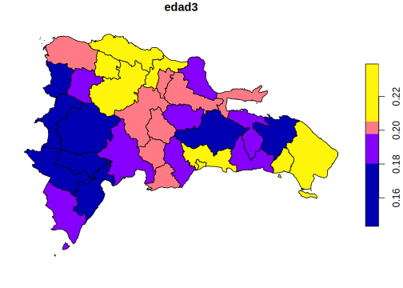
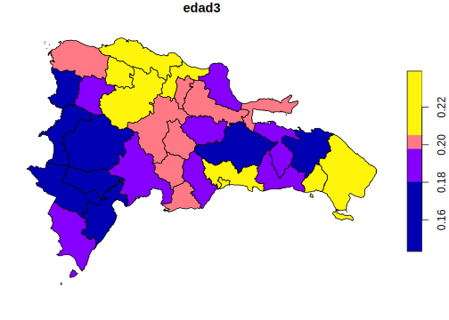

 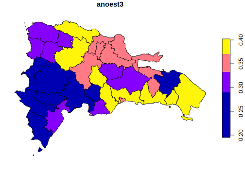
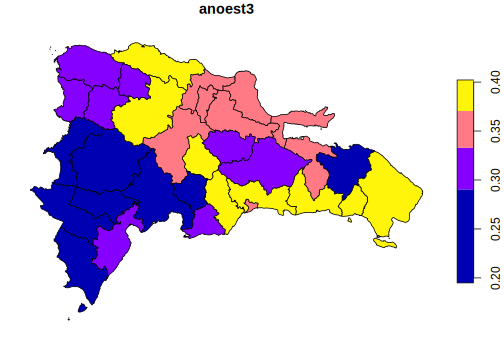 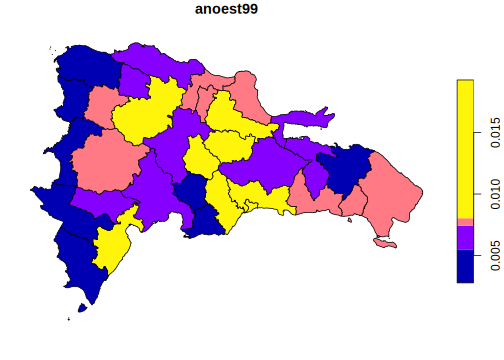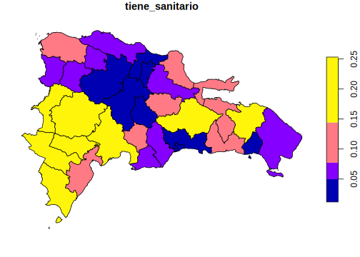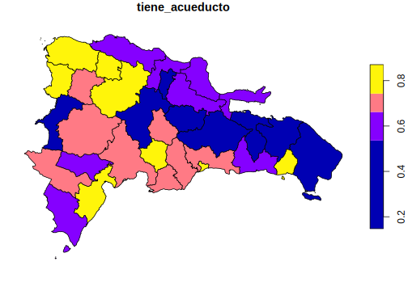
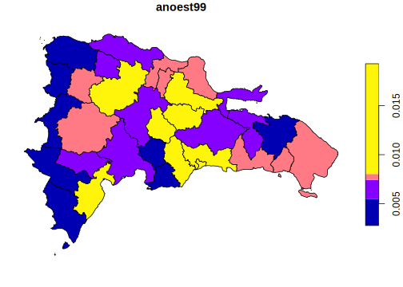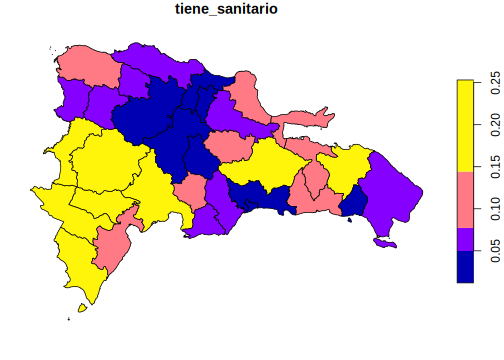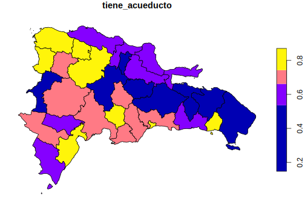
 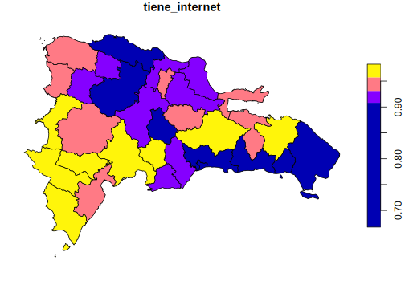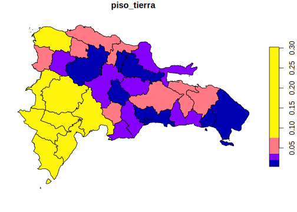
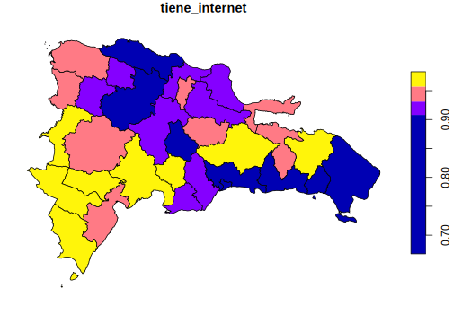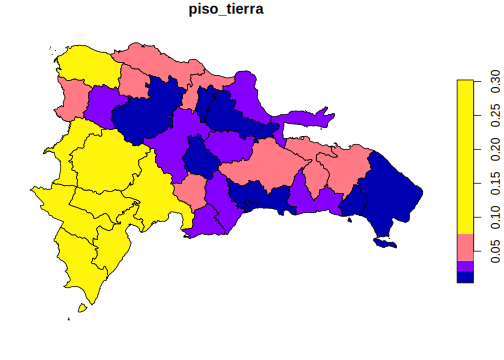 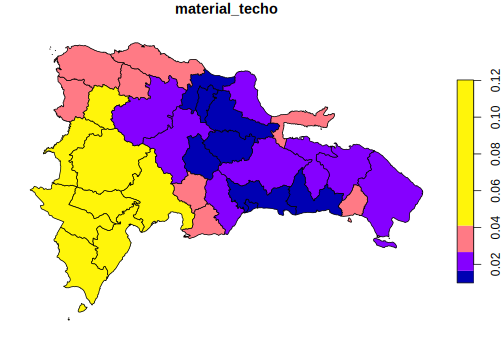
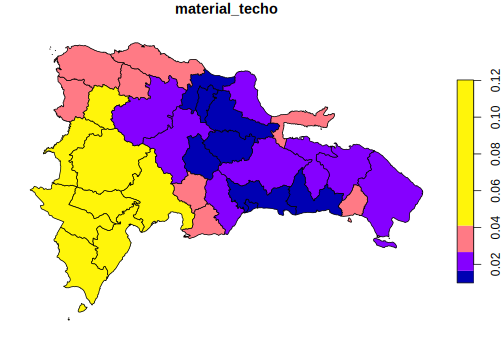 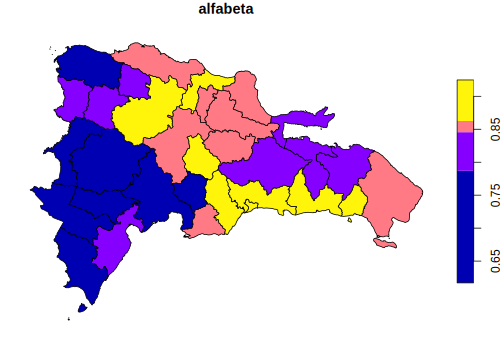
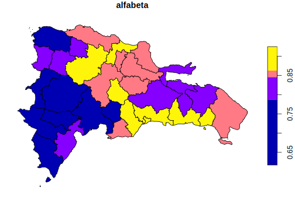